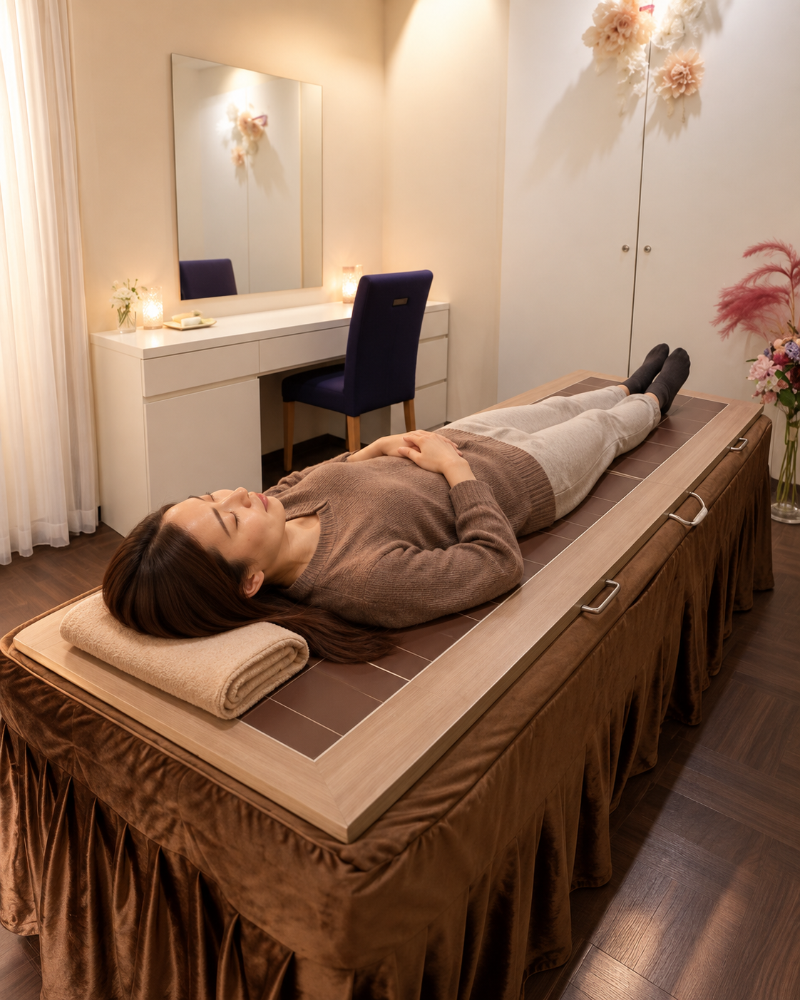
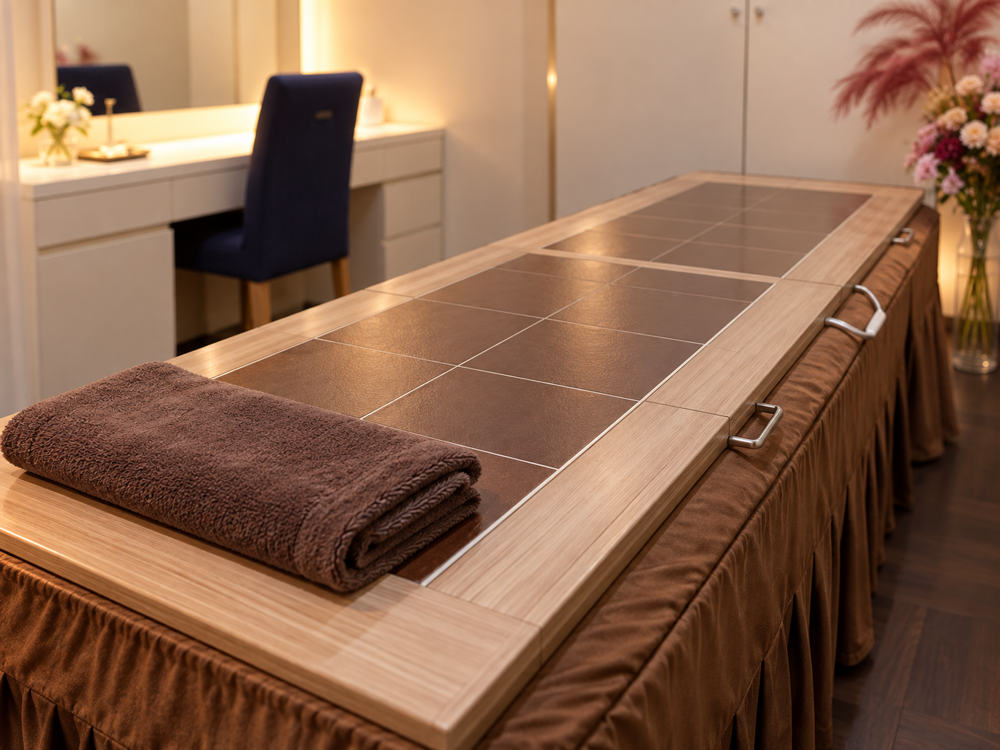
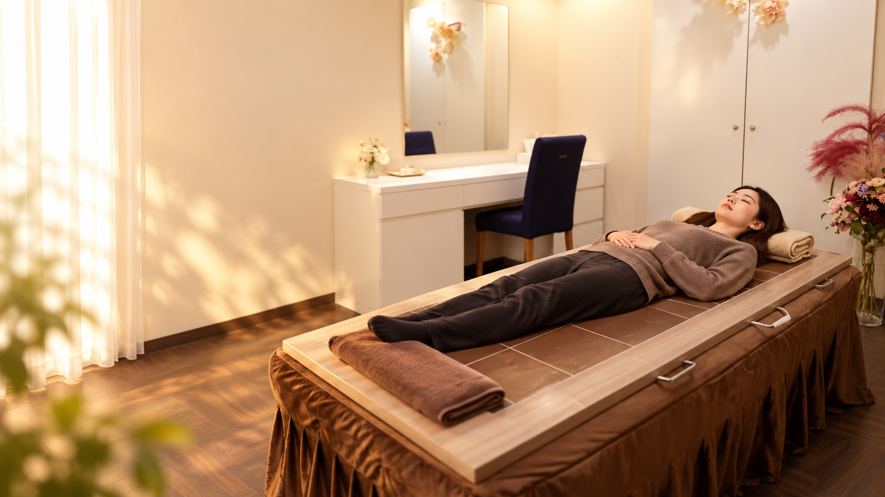
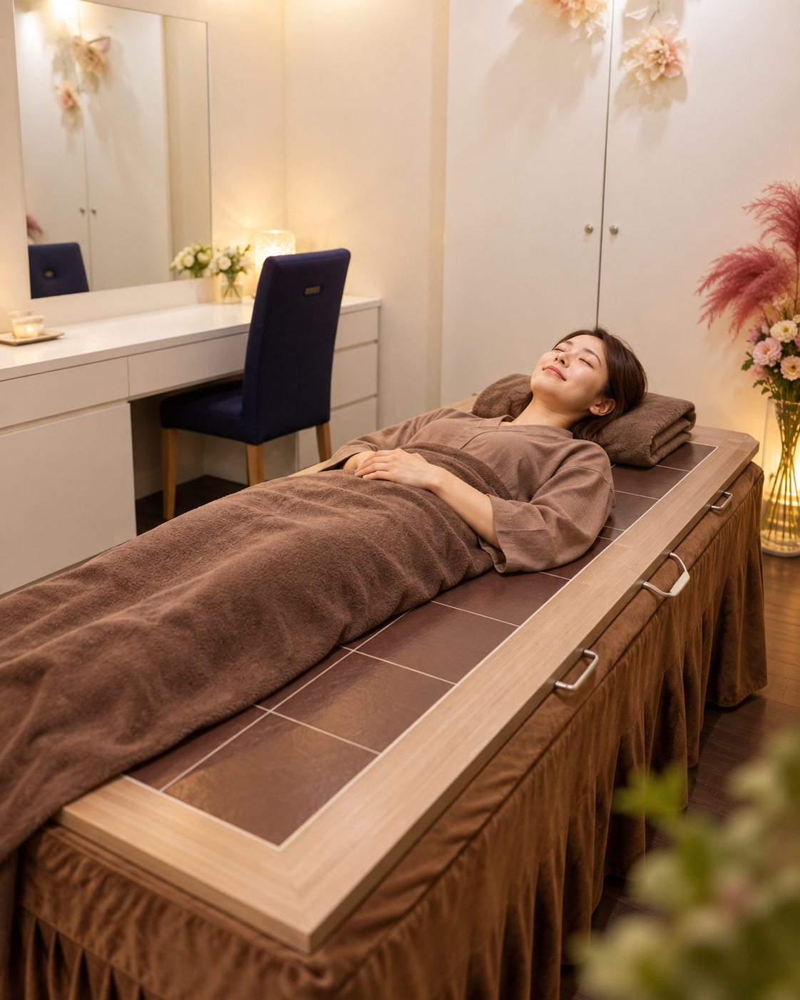

FOR BUSY WOMEN
忙しいあなたには、
土日の癒し時間。
平日は仕事や家事で、自分のことはつい後回し。
せっかくの休日も、美容院・買い物・用事で終わってしまう。
だからこそ、ほんの15分でも30分でも、
「休むこと」を予定に入れていい。
予定を詰める休日から、
回復を予定に入れる休日へ。
陶板浴は、約40℃前後の心地よい温かさの陶板の上で、ただ横になるだけ。
完全個室・着替え不要・初回15分から。
忙しい毎日に、土日の癒し時間を。
夏は、冷房・冷たい飲み物・シャワー中心の生活で、知らないうちに身体を冷やしがち。
秋は、そんな“冷やす生活”から“温める生活”へ切り替えるタイミングです。
ひとつでも当てはまるなら、今のあなたに必要なのは、
“頑張る温活”ではなく“休む温活”かもしれません。

気になるものをタップすると、陶板浴のおすすめポイントが表示されます。
気になる項目を選ぶと、ここにおすすめの受け方が表示されます。

温められた陶板の上で、ただ横になるだけの、やさしい温活です。
高温を我慢するのではなく、心地よい中温の中でゆっくり過ごします。
サウナのような高温ではなく、やさしい温かさ。熱い場所が苦手な方にも取り入れやすい温活です。
「準備が面倒で続かない」を減らし、受けたいと思ったときに取り入れやすいスタイルです。
周りを気にせず、自分のペースで。静かに過ごしたい方にも心地よい時間になります。
初回15分から体験しやすく、まずは一度試してみたい方にもハードルが低いのが魅力です。
汗をたくさんかくために我慢するのではなく、ただ横になって、身体を休ませる時間そのものが価値になります。
忙しい毎日に不足しがちな余白をつくれることも、陶板浴ならではの魅力です。


清潔感のある個室空間で、周りを気にせずゆっくり。
「どんな場所なんだろう？」が事前にイメージできることも、初めての方には大切な安心材料です。
どれが一番というより、自分にとって続けやすい方法を選ぶことが大切です。
| 項目 | 陶板浴 | お風呂 | サウナ |
|---|---|---|---|
| 温度の目安 | 約40℃前後 | 約38〜40℃ | 高温 |
| 過ごし方 | 横になって休む | お湯につかる | 高温空間で過ごす |
| 印象 | やさしく温まる | 日常使いしやすい | 爽快感が強い |
| 向いている方 | 頑張らずに整えたい方 | 毎日の入浴習慣に | 高温が好きな方 |
まずは気軽に体験。店舗やメニューを確認してご予約ください。
初めての方にも分かりやすく、流れをご説明します。
温められた陶板の上で15〜40分ほど、ただゆっくり過ごします。
終わったあとも慌てず、自分のペースで。心地よさまで含めてケア時間に。
陶板浴はサウナのような高温空間とは異なり、約40℃前後の心地よい温かさの中で横になって過ごします。熱さを我慢するのが苦手な方にも取り入れやすい温活です。
大量の発汗だけを目的にするものではありません。ゆっくり温まりながら、リラックスして過ごすことを大切にしています。
まずは初回15分から気軽に体験できる設計にすると、初めての方にもハードルが低くおすすめです。実際のメニュー内容に合わせて表記をご調整ください。
冷えが気になる方、なんとなく疲れやすい方、休む時間が足りない方、サウナの熱さが苦手な方、秋から冬に向けたセルフケア習慣を始めたい方におすすめです。